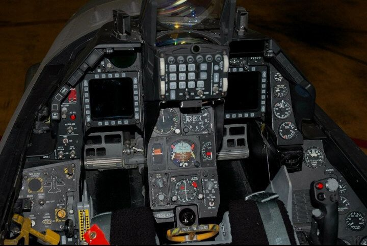

Design & Technology
Jump to a section: Fly-By-Wire | Airframe | Cockpit & HOTAS | Specifications
When the F-16 entered service, it introduced a cluster of technologies that were either entirely new to production fighter aircraft or had never been combined in a single design before. Each of these innovations was driven by the same goal: to give the pilot the maximum possible advantage in combat while keeping the aircraft as light and agile as possible.

The F-16 cockpit — designed around the pilot with HOTAS controls.
Fly-By-Wire Flight Control System
The most revolutionary aspect of the F-16’s design is its fly-by-wire (FBW) flight control system. Unlike earlier aircraft, where the pilot’s control inputs were transmitted to the control surfaces through cables and hydraulic rods, the F-16’s inputs are converted into electronic signals and processed by a quadruplex digital flight control computer before being sent to the control surfaces. Four independent computers run simultaneously; if one fails, the others take over instantaneously without the pilot noticing.
The reason this system was essential is that the F-16 was designed with relaxed static stability (RSS): the aircraft’s centre of gravity is positioned slightly aft of its aerodynamic centre, making it naturally unstable in the pitch axis. An unstable aircraft is far more agile than a stable one — it responds to control inputs faster and requires less force to change direction — but it cannot be flown by a human pilot alone. The flight control computer makes continuous tiny corrections, typically 40 times per second, to keep the aircraft in controlled flight. This was the first production fighter anywhere in the world to use this technology.
Airframe Design
The F-16’s airframe uses a blended wing-body design, in which the fuselage and wings merge smoothly into a single lifting surface rather than being separate structures joined together. This approach increases lift without increasing drag, and distributes structural loads more efficiently, allowing for a lighter and stronger airframe. The leading edge extensions (LEX) — the curved strakes running from the wing roots toward the nose — generate powerful vortices at high angles of attack that energise airflow over the wings, maintaining lift where a conventional wing would stall.
- Bubble Canopy
- The F-16 features a large, one-piece frameless bubble canopy that gives the pilot an almost unobstructed 360-degree view of the surrounding airspace. This exceptional visibility was a deliberate design choice: in close-range air combat, a pilot who loses sight of the enemy loses the fight. The canopy is made from a single piece of polycarbonate to eliminate the structural frames that would block the pilot’s view in a conventional multi-piece canopy.
- Reclined Ejection Seat
- The pilot sits in an ACES II zero-zero ejection seat reclined at 30 degrees from the vertical, compared to the near-upright 13-degree recline common in earlier fighters. This increases the pilot’s ability to withstand high-g manoeuvres by distributing the g-load more evenly along the body axis, reducing blood pooling in the legs and delaying g-induced loss of consciousness (G-LOC).
- Cropped Delta Wing
- The F-16 uses a cropped delta wing with a leading edge sweep of 40 degrees. This wing shape provides excellent performance across a wide speed range, combining the low-speed lift of a longer wing with the structural strength and low drag of a delta at supersonic speeds. The wing is relatively thin, which reduces transonic drag, and the entire trailing edge consists of combined flaperons that act simultaneously as flaps and ailerons.
- Single Ventral Fin
- To prevent the fuselage from blocking airflow to the ventral fins at extreme angles of attack, the F-16 uses a single large ventral fin beneath the tail, supplemented by the twin horizontal stabilators. This arrangement keeps the aircraft controllable even at very high angles of attack, a feature critical for close-in manoeuvring combat.
Cockpit Design and HOTAS
The F-16 cockpit was designed from the start around the concept of HOTAS — Hands On Throttle And Stick. HOTAS means that every control function the pilot needs in combat — weapons selection, radar modes, countermeasures, communications — can be accessed without removing either hand from the throttle or the control stick. This was a radical departure from earlier cockpits, where pilots often had to reach across the cockpit to flip switches during the most critical moments of combat.
The F-16 also introduced the side-stick controller to production fighter aircraft. Instead of the traditional centre-mounted stick between the pilot’s knees, the F-16’s control stick is mounted on the right console, allowing the pilot to rest their arm on the side rail during high-g manoeuvres. In the original design, the sidestick was completely rigid — it sensed the force applied rather than movement — though later production aircraft introduced a small amount of stick displacement. The cockpit also features a wide-angle heads-up display (HUD) that projects flight data and weapons information onto the canopy in the pilot’s line of sight.
Functions Accessible via HOTAS (without removing hands from controls):
- Weapons pickle button (weapon release)
- Air-to-air and air-to-ground weapon mode selection
- Radar range and mode changes
- Chaff and flare (countermeasures) dispensing
- Autopilot and autopilot override
- Radio communications (push-to-talk)
- Nose wheel steering on the ground
- Dogfight / Missile Override mode
F-16C Block 50 Specifications
| Specification | Value |
|---|---|
| Crew | 1 (F-16C); 2 (F-16D trainer) |
| Length | 15.06 m (49 ft 5 in) |
| Wingspan | 9.96 m (32 ft 8 in) |
| Wing Area | 27.87 m² (300 ft²) |
| Empty Weight | 8,570 kg (18,900 lb) |
| Max Takeoff Weight | 19,187 kg (42,300 lb) |
| Engine | 1 × Pratt & Whitney F100-PW-229 or GE F110-GE-129 turbofan |
| Thrust (dry / afterburner) | 79.2 kN / 129.6 kN (17,800 lbf / 29,100 lbf) |
| Maximum Speed | Mach 2.05 (> 2,410 km/h at altitude) |
| Combat Range | 547 km (295 nmi) on a hi-lo-hi strike mission |
| Ferry Range | 3,900 km (2,100 nmi) with external tanks |
| Service Ceiling | 15,240 m (50,000 ft) |
| Maximum g-Loading | +9 g / -3 g |
| Hardpoints | 11 (2 wingtip, 6 underwing, 1 centreline, 2 inlet) |
| Gun | 1 × M61A1 Vulcan 20 mm rotary cannon (511 rounds) |
For official information on current F-16 production and upgrades, visit Lockheed Martin’s F-16 page.
← Back to Home